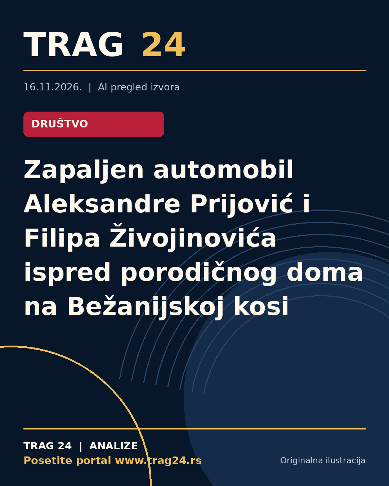

Zapaljen automobil Aleksandre Prijović i Filipa Živojinovića ispred porodičnog doma na Bežanijskoj kosi

ŠTA SE DOGODILO
Večeras je ispred porodičnog doma pevačice Aleksandre Prijović i njenog supruga, kompozitora Filipa Živojinovića, zapaljen njihov automobil. Požar je zahvatio i drugo vozilo koje je bilo parkirano pored.
HRONOLOGIJA
Automobil je bio parkiran neposredno pored kuće na Bežanijskoj kosi kada je došlo do požara. Na lice mesta ubrzo su pristigli policijski službenici koji su započeli uviđaj i prikupljanje tragova. Ulaz u dom obezbeđuju policajci, a roletne na prozorima su spuštene. Nije poznato tačno vreme početka požara niti eventualni motivi i počinioci incidenta.
ŠTA NAVODE IZVORI
Telegraf izveštava o zapaljenju automobila ispred doma i potvrđuje da su policijske ekipe izvršile uviđaj na licu mesta. Iz Informera dolaze različite informacije vezane za ličnosti uključene, ali nema detalja o samom incidentu zapaljenja vozila. Informer ne donosi potvrđene informacije o ovom događaju, već pruža druge informacije o članovima porodice i širem društvenom kontekstu.
ŠTA JE POTVRĐENO
Sa sigurnošću se može reći da je automobil vlasništvo Aleksandre Prijović i Filipa Živojinovića zapaljen ispred njihovog porodičnog doma na Bežanijskoj kosi. Policija je izvršila uviđaj i obezbeđuje prostor oko kuće. Incident je izazvao požar koji se proširio i na drugo, obližnje vozilo.
ŠTA NIJE POTVRĐENO
Iz dostupnih tekstova nisu poznati uzroci samog zapaljenja vozila, identitet odnosno motiv počinilaca, kao ni da li je iko povređen. Takođe, nema potvrde o eventualnim ranijim pretnjama ili sličnim događajima vezanim za vlasnike automobila.
ŠTA OSTАJE OTVORENO: Ostaje nepoznato šta je dovelo do požara i ko stoji iza njega. Nisu predstavljeni ni dalji koraci policijske istrage, niti reakcija vlasnika. Takođe, nije jasno da li će biti preduzete dodatne mere bezbednosti u nastavku.
Izvori
- https://informer.rs/dzet-set/estrada/1170259/aleksandra-prijovic-zapaljen-automobil
- https://www.telegraf.rs/jetset/vesti-jetset/4433578-zapaljen-automobil-aleksandre-prijovic-i-filipa-zivojinovica-drama-ispred-doma-na-bezaniji
Ova analiza je pripremljena uz pomoć veštačke inteligencije na osnovu javno dostupnih izvora. Navodi izvora nisu nužno nezavisno potvrđeni.